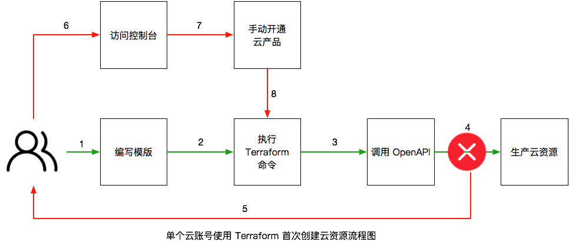
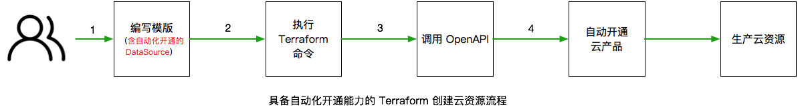

什么是 Terraform 和云产品开通
Terraform 一款开源的运行在客户端的自动化资源编排工具，以 IaC 的理念实现云资源的自动化运维。更多细节可以参考 Terraform 是什么。 云产品开通，顾名思义，就是阿里云客户在使用某些云产品前，需要登录云产品官方控制台，手动点击开通按钮来完成对当前云产品的激活，在此之后才能通过 Terraform、CLI、API 等自动化的方式或者控制台来操作和使用云产品。就云产品开通而言，阿里云的云产品分为两大类：
- 免开通型产品即无需任何的手动开通操作，不管是 Terraform 等的自动化方式还是控制台访问，开箱即用，直接可以创建新的云资源。典型的云产品如弹性计算 ECS，网络产品 VPC，负载均衡 SLB，弹性伸缩 ESS等。
- 开通型产品此类产品在使用和创建云资源前，需要登录控制台完成开通动作，否则直接使用 Terraform 或者调用 OpenAPI会报云产品尚未激活的错误；访问控制台时也会自动跳转到云产品开通页面，导致客户使用起来非常的不方便。典型的云产品如 API 网关，日志服务，对象存储服务 OSS，密钥管理服务 KMS，函数计算等。

自动化是 Terraform 的一大亮点，但是云产品的手动开通动作却严重削弱了其自动化的能力，将原本只需要四步的操作拖成了八步。对客户而言，当使用云产品的使用逐渐丰富多样，使用的云账号逐渐增多时，手动开通的成本也在以 _MxN _的量级在持续增加。
客户如何使用 Terraform 实现自动化开通
自动化开通，以 OpenAPI 的方式来消除自动化流程上的障碍，降低客户在使用云产品时的成本，提升客户使用体验。基于 Terraform 的自动化开通方案，就是将云产品开通的动作以 DataSource 的方式在模板中定义出来，借助云产品提供的自动化开通的 Open API 来消除使用 Terraform 过程中的云产品开通障碍，解决客户使用 Terraform 的痛点。

对客户而言，当需要使用某个开通型产品时，只需要在模板中增加一个对应云产品开通的 DataSource，并设置开通的动作 enable = "On" ，然后执行简单的 terraform plan 或者 terraform apply 命令即可完成自动化开通。阿里云 Terraform Provider 从 1.96.0 版本开始，已经支持对 2 款云产品 API 网关和日志服务的自动化开通，具体的使用如下所示：API 网关自动化开通
data "alicloud_api_gateway_service" "open" {
enable = "On"
}
日志服务自动化开通
data "alicloud_log_service" "open" {
enable = "On"
}
基于 Terraform 的自动化开通方案在解决了客户开通云产品问题上的痛点问题的同时，还提供了以下几个亮点功能：
- 将控制权交还给客户每个客户都有自己选择是否要开通云产品的权利，当需要开通需求时，只需要在模板中设置
enable = "On"即可，开通之后，将返回云产品开通的状态。 - 支持业务幂等不管执行多少次模版，对于已经开通的云产品，将直接返回开通状态，避免多次开通带来的潜在错误。
- 使用简单只有一个控制开关的参数，无需其他的设置参数。
更多云产品提供了自动化开通的 OpenAPI
除了 Terraform 已经支持的两款云产品 API网关和日志服务外，越来越多的云产品开始提供自动化开通的 OpenAPI，客户可以直接通过访问 OpenAPI Explore 调用对应的 OpenAPI 来实现自动化开通：
| 云产品 | 自动化开通的 OpenAPI |
|---|---|
| API 网关 | OpenApiGatewayService |
| 日志服务 | OpenSlsService |
| 批量计算 | OpenBatchComputeService |
| 混合云备份服务 | OpenHbrService |
| 自然语言处理 | OpenAlinlpService |
总结
云产品手动开通是 Terraform，CLI，OpenAPI 等自动化操作方式的拦路虎，基于 Terraform 的自动化开通方案旨在解决这个拦路虎，降低客户使用成本，提供更好的使用体验。目前 Terraform Provider 已经支持了两个云产品的自动化开通，对更多云产品的自动化开通能力，我们在持续支持的路上，敬请期待。